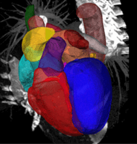

Projects/ code/ data |
| Education channels | ZMIC bilibili → ZMIC youtube → |
| |
Toward real world medical image analysisComprehensive Analysis & computing of REal-world medical images (CARE)CARE 2025 CARE 2024 |
| |
LAScarQS'22 ChallengeWe will provide 200 subjects, and the target of this challenge is to quantify or segment the myocardial pathology (scars) of left atrial walls from LGE MRI of patients suffering atrial fibrillation. |
 |
MyoPS'20 ChallengeThe challenge provides aligned cardiac T2/bSSFP/LGE MRI, which had been manually segmented the scars, edema, normal myocardium and LV/RV blood pool, from 45 patients. The target is to segment the myocardial pathology combining multi-sequence CMR. Specifically, the myocardium will be classified into normal, infarcted and edema regions, which is important for the diagnosis and treatment management of patients. |
 |
MS-CMRSeg'19 ChallengeWe provide 45 multi-sequence CMR images from patients who underwent cardiomyopathy. Each patient had been scanned using the three CMR sequences, i.e. the LGE, T2 and bSSFP. The task of this challenge is to segment the ventricles and myocardium from LGE CMR, combing with other two sequences (T2 and bSSFP) from same patients, which can be used to assist the LGE CMR segmentation. |
|  | MMWHS ChallengeThe challenge provides 120 multi-modality cardiac images acquired in real clinical environment. It aims at creating an open and fair competition for various research groups to test and validate their methods, particularly for the multi-modality whole heart segmentation. It is not only to benchmark various whole heart segmentation algorithms, but also to cover the topic of general cardiac image segmentation and registration and modeling. |
 |
S/W zxhprojzxhproj is a medical image computing platform, being developed and maintained by Xiahai Zhuang since 2004. Based on it, several image registration and segmentation tools have been developed, such as multivariate mixture model, cardiac segmentation, locally affine registration method (LARM), spatially encoded mutual information (SEMI), as well as other image/vector field processing tools. The tools work with nifty (nii/nii.gz) and gipl short int data formats. |